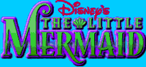
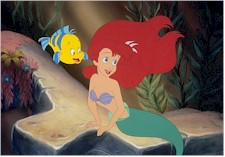
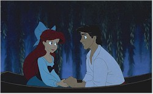
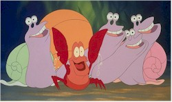

Contents | Features | Reviews | News | Archives | Store |
 |
|
| Movie Credits | Buy It! |
The Little Mermaid
Review by Carrie
Gorringe
Posted 14 November 1997
|  | Directed by John Musker and Ron Clements Starring
the voices of Rene Auberjonois, Screenplay by John Musker and Ron Clements, |
When Disney’s version of The Little Mermaid was released in 1989, no one could have anticipated the film’s considerable success. The trademark Disney touches were present – flawless visuals augmented by lots of effects work, songs that were eminently hummable, colorful on-screen personalities portrayed by talented off-screen personalities – so success should not have been that surprising. Its success, however, did encourage Disney to work on the truly groundbreaking Beauty and the Beast, released two years later (and was the first animated film to be nominated for an Oscar in the Best Picture Category). That film set in motion a string of films – Aladdin, The Lion King, The Hunchback of Notre Dame and Hercules – that were breathtaking in their technological complexity. Unfortunately, after 1994’s The Lion King, there was a sense among audiences that technology and the urge to one-upmanship had superceded the urge to tell a good story. Hunchback did only half the business of The Lion King, and Hercules, for all of its merits, will turn a very modest profit. In retrospect, The Little Mermaid was almost a throwback to traditional Disney adaptations of classic fairy tales, such as Cinderella and Snow White and the Seven Dwarfs; it was, and is, a film with quiet charms, as opposed to the 10,000-watt brilliance of those that followed.
In case memory fails you, the story, according to Disney, goes as follows: Ariel (Benson), the youngest daughter of King Triton (Mars), is having those typical sixteen-year-old growing pains. She feels that the water would seem bluer only if it weren’t water at all, but land. Yes, Ariel wants to be a human and walk on land, a desire exacerbated by her sudden attraction to a Prince named Eric (Barnes). Against the better judgment of her friend Flounder (Marin) and her father’s advisor, Sebastian the Crab (S.E. Wright), Ariel sells her voice to the conniving sea witch named Ursula (Carroll), for a three-day pass on land. If Ariel cannot make Eric fall in love with her, then she will forfeit her soul to Ursula. To make matters worse, Ursula has robbed Ariel of the one attribute that will mark her as the woman whom Eric loves: her siren-like voice. Since this is not the only scheme that Ursula has nestled in her tentacles to ensure that the deal ends in her favor, Sebastian, Flounder and a confused seagull named Scuttle (Hackett) have their respective implements full trying to prevent Ursula from winning.
To those accustomed to presumably grander objectives than finding love, The Little Mermaid may seem a little too restrained in its pace and focus, but the film still possesses a winning personality, thanks to the wonderful effects animation and the witty musical compositions by Alan Menkin and the late Howard Ashman. To take just one example, the "Under the Sea" sequence, set to the Oscar-winning song of the same name, is the scintillating highlight of the film, full of rich tropical color and striking movements, and underscores the considerable talents of Samuel E. Wright, who gave Sebastian the charm to act as the moral and comic center of the piece. It takes a fair degree of subversive moxie, admittedly, to make a crab use the words "sea" and "fricassee" in one stanza; the act is not unlike asking a cow to confess its fears of becoming beef stroganoff . Moreover, The Little Mermaid has benefited from an extensive overhaul. The analog soundtrack has been replaced by four different versions, including six-track digital sound. The entire film has been digitized to clean up some dirt and smudges. Thanks to the fall cleaning, the lovely gem now sparkles even brighter, and the adventures of the lovesick Ariel, the faithful Flounder, the wily Sebastian and the evil Ursula are back on the screen for your entertainment – but only until November 30th.
Contents | Features | Reviews | News | Archives | Store
Copyright © 1999 by Nitrate Productions, Inc. All Rights Reserved.